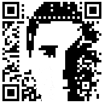

Simon Vans-Colina
Simon Vans-Colina
You should be ashamed to die until you have acheived some victory for humantiy.
simon (at) vans-colina (dot) com
tel: +44 749 1693 818
VCard
twitter: @simonvc
This QR image will bring you to this page, incase you want to save my
VCard
on your phone.

simon@vans-colina.com GPG Key: D78311AD Fingerprint: F251 3223 EBB4 6E00 F160 84A4 AEA8 9F35 D783 11AD Download my public key from
the keyserver
simon@monzo.com (formerly getmondo.co.uk) GPG Key: B201A94A Download my Mondo public key from
the keyserver